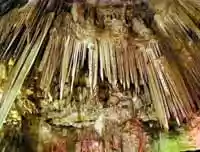

SRBIJA
Rajkova pećina se nalazi se u istočnoj Srbiji, 2 km od Majdanpeka. Do nje vodi asfaltni put pored obale reke Mali Pek i veštačkog jezera Veliki zaton.
Čitava okolina izvorišta malog Peka je bogata mešovitom šumom bukve, javora i hrasta i predstavlja jedinstveno prirodno i speleološko bogatstvo.
Rajkova pećina je dobila ime po čuvenom Rajku Vojvodi, za koga se pretpostavlja da je živeo u 19. veku. On je, po predanju, danju bio mehandžija, noću
je pljačkao turske karavane, a blago sakrivao u ovoj pećini. Pećinu je prvi istražio geograf Jovan Cvijić 1894. godine, a istraživanje je nastavljeno tek
sedamdesetih godina 20. veka, pod rukovodstvom dr Radenka Lazarevića. Za turiste je otvorena 1975.

Ulazni deo pećine iz pravca sela Rajkova bio je nastanjen još u praistoriji, o čemu svedoči kameni čekić koji se čuva u arheološkoj zbirci Muzeja u
Majdanpeku. Rajkova pećina je protočna pećina, kroz koju protiče Rajkova reka. Nakon izlaska iz pećine ona se spaja sa Paskovom rekom, koja takođe
ističe iz pećine i tako nastaje Mali Pek.
Po svojim speleološkim karkteristikama i morfogenetskoj evoluciji, jedna je od najinteresantnijih pećina u našoj zemlji. Pećina se sastoji od dva
horizonta, odnosno ponorskog i izvorskog dela i u oba se razlikuju niži – hidrološki aktivni i viši – suvi horizont. Sa dužinom od 2304 m do sada
istraženih kanala najduža je pećina u Srbiji. Spajanjem rečnog i suvog kanala dobijena je kružna staza dužine 1410 m, a turisti za sada obilaze delove
rečnog i suvog horizonta dužine 633 m. Temperatura u pećini je + 8°C, relativna vlažnost vazduha je blizu 100%.
Rajkova pećina je bogata pećinskim nakitom različitih oblika, od snežno belog kristalnog kalcita, najkvalitetnijeg u Srbiji. Hodajući pećinskom stazom
posetilac ima jedinstven doživljaj žuborenja bistre Rajkove reke koja odjekuje pećinskim prostorima „Ježeve dvorane“, sa hiljadama kalcitnih cevčica
na stropu. Zatim sledi prelazak preko rumenih bigrenih kada, pored „Zimske bajke“ sa „Belim medvedom“ i ulazak u „Kristalnu šumu“ u kojoj se nalazi
„Treperavo jezerce“. Neke od najpoznatijih figura su i „Egipatska boginja“, „Puž“, „Panj sa gljivama“ i dr.